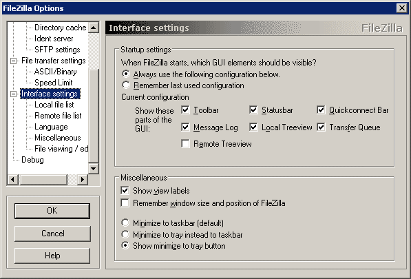

Interface settings
Overview:
The interface page controls the visual layout of FileZilla.

Startup settings:
Here you can configure how you want FileZilla to look every time it starts up.
Always use the following configuration below: click this radio button if you want FileZilla to always keep a specific look.
Next to the label "Show these parts of the GUI", you can choose components you want FileZilla to show:
Toolbar
Status bar
Quickconnect Bar: a thin bar at the top of a normal FileZilla window where you can quickly type in connection information and connect.
Message log: top pane of a normal FileZilla window where communications between FileZilla and the FTP server is displayed.
Local Treeview: a pane in the left half of a normal FileZilla window where folders on your local computer are displayed.
Transfer Queue: the bottom pane of a normal FileZilla window where transfers are displayed.
Remote Treeview: a pane in the right half of a normal FileZilla window where folders on your remote computer are displayed.
Next to the label Default style, you can choose how files are displayed on your local computer and on the remote site.
Details: similar to the Details view of Windows Explorer where every file is displayed on a separate line with attributes in columns.
Large Icons: similar to the Large Icons view of Windows Explorer where every file is represented by a large icon.
List: similar to the the List view of Windows Explorer where files are displayed in a list.
Small Icons: similar to the Small Icons view of Windows Explorer where every file is represented by a small icon.
If you choose the Details style, then you can choose the columns displayed by clicking the checkboxes next to the Columns in details style label.
Local Site:
Filesize: size of the file
Filetype: type of file (i.e. text file, application, etc.)
Last modified time: the timestamp from when the file was last modified
Remote Site:
Filesize: size of the file
Date/Time: the timestamp from when the file was last modified
Permissions: the permissions set on the file
Remember last used configuration: click this radio button if you want FileZilla to remember and use the look it had when you last ran it. In this case, you have to use the menu of the main window to change the visual layout
Miscellaneous:
Check Show view labels if you want the labels "Local Site:" and "Remote Site:" to appear next to the directory text boxes in the FileZilla main window.
If Remember window size and position of FileZilla is enabled, the size and position of the main window will be saved and restored if you close and restart FileZilla.
With Minimize to tray, Minimize to tray instead to taskbar and Show minimize to tray button you can select the behaviour of FileZilla if you click the minimize button on the main window.
Additional Settings:
Local file list - Configures the layout of the local file list
Remote file list - Configures the layout of the remote file list
Language - Sets the language of FileZilla
Miscellaneous - Additional interface settings
File viewing / editing - Sets up filetype associations for viewing / editing remote files